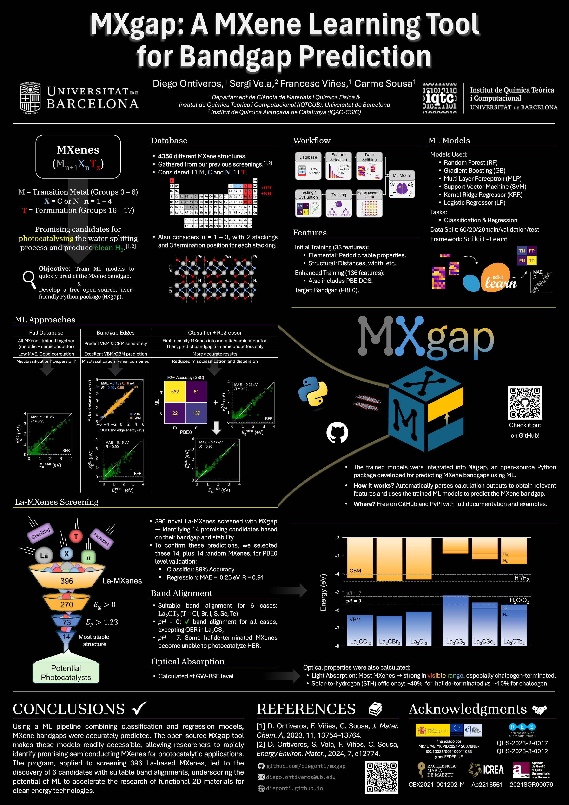

Presented at:
WATOC, Oslo, 2025
IQTC Meeting 2025, Barcelona, 2025.
References
D. Ontiveros, S. Vela, F. Viñes, C. Sousa. ACS Catal., 2025, 15, 14403–14413.
Code
Download
Download Poster (PDF)Acknowledgements
Ministerio de Ciencia e Innovación (PID2021-126076NB-I00)
IQTC unit of excellence María de Maeztu (CEX2021-001202-M)
Computational resources from Red Española de Supercomputación (QHS-2023-2-001, QHS-2023-3-001)
